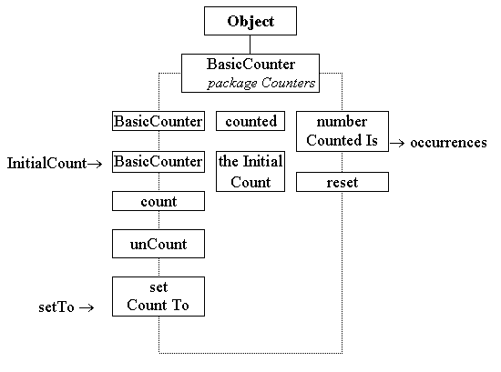

The top of the diagram indicates that the BasicCounter is a child of the Java Object class, which would be the default if not explicitly stated, and that it is contained within the Counters package of classes. The dotted lines around the class diagram indicate that it is an abstract class. The two data attributes are the number of occurrences counted and value from which it starts counting (theInitialCount). The public enquiry action numberCountedIs() will return the value of the counted attribute and the reset() action will reset the value of counted to theInititalCount.
The actions shown on the left are only partially public. (Java has a number of degrees of visibility but the three used here: fully public, fully private and partially public, are sufficient for an initial course.) They can only be seen and used by instances of child classes in the same hierarchy.
The first two actions have the same name as the class, BasicCounter, and so are constructors. The argument, InitialCount, is the value for theInitialCount of the instance being constructed, which is set to zero if the default constructor is used. The count() and unCount() actions have the expected effects upon the counted attribute and the setCountTo() action will set the value of counted to the value of its argument, setTo.